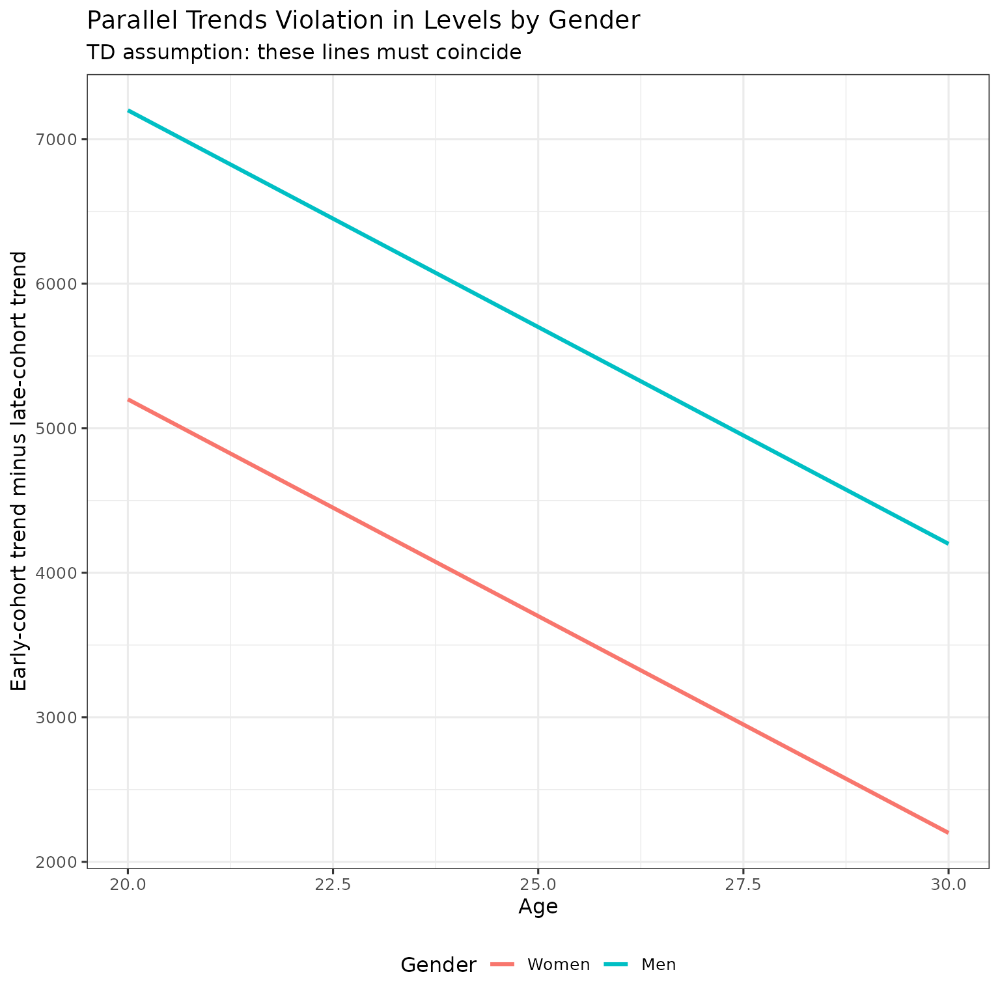
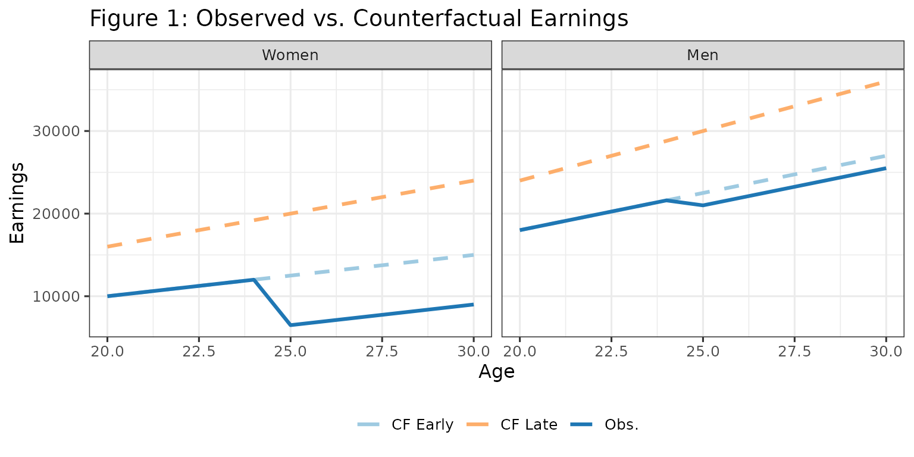
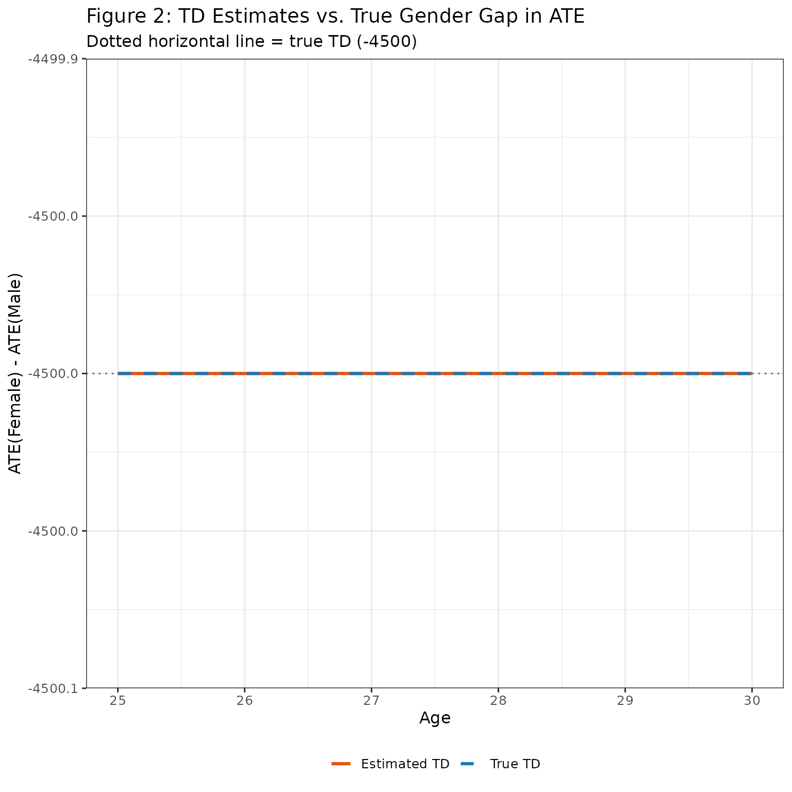
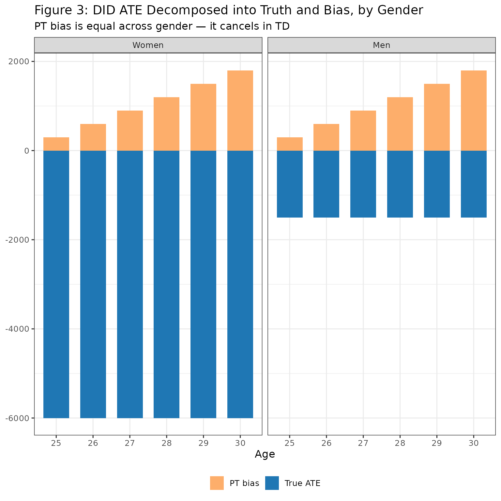
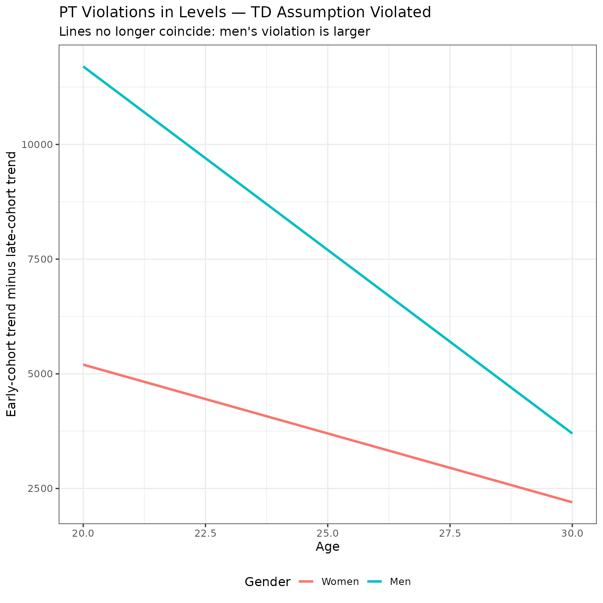
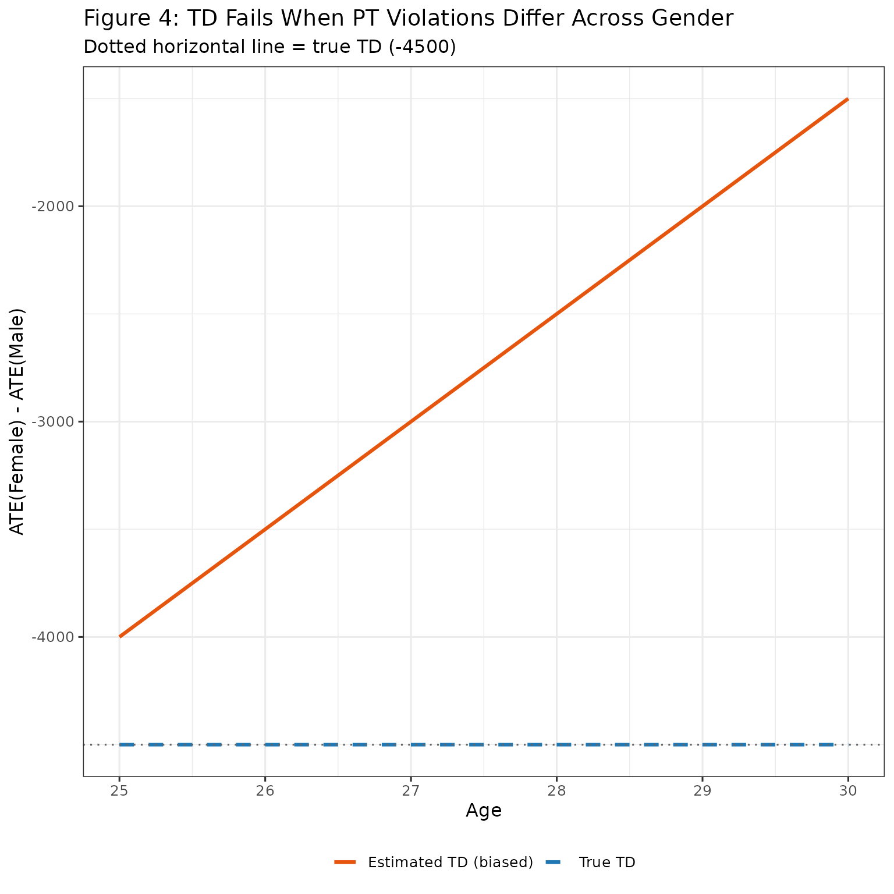

Overview
The aim of this vignette is to create intuition on the triple differences (TD) identification framework and its identifying assumption.
TD estimates the gender gap in treatment effects in levels:
Like DID, TD relies on a parallel trends assumption — but a stronger one. Where DID assumes no cohort-level trend difference within each gender, TD allows such violations but requires them to be equal across genders in levels. Formally, the PT violation for gender and cohort comparison is:
The TD identifying assumption is: .
This vignette demonstrates:
- The TD identifying assumption and when it holds
- How TD recovers the true gender gap in ATE when the assumption holds
- What goes wrong when the assumption fails
- Why NTD’s assumption is weaker than TD’s
We’ll use a simple DGP to visualize everything. You are encouraged to play with the code to see how results change under different parameters.
The DGP
We create a DGP with:
- Two genders: women and men
- Two treatment cohorts: early () and late ()
- Linear earnings growth, with late cohorts having steeper slopes than early cohorts
- Crucially: the slope difference between cohorts is the same in levels for men and women — so PT violations are equal across gender
The key design choice: the steeper slope for the late cohort is an additive increment that is the same for both genders. This means the PT violation in levels is identical for men and women, satisfying the TD assumption.
# Parameters
baseline <- 500
slope_extra <- 300 # additive slope bonus for late cohort (same for both genders)
slope_m_bonus <- 400 # men earn more (shifts level, not slope structure)
ages <- 20:30
d_early <- 25
d_late <- 30
# Counterfactual earning slopes (earnings = slope * age)
s_f_early <- baseline
s_f_late <- baseline + slope_extra
s_m_early <- baseline + slope_m_bonus
s_m_late <- baseline + slope_m_bonus + slope_extra # same additive increment
# Treatment effects (ATE)
ate_f <- -6000
ate_m <- -1500
true_td <- ate_f - ate_m # gender gap in levels: the estimand of interest
# Build each group
make_group <- function(sex, D, slope, ate_level) {
tibble(
age = ages,
female = sex,
D = D,
y_0 = slope * age,
y_1 = y_0 + ifelse(age >= D, ate_level, 0),
y = y_1
)
}
data <- bind_rows(
make_group(1, d_early, s_f_early, ate_f),
make_group(1, d_late, s_f_late, ate_f),
make_group(0, d_early, s_m_early, ate_m),
make_group(0, d_late, s_m_late, ate_m)
)The true TD (gender gap in ATE) is -4500.
Verifying the TD Assumption Holds
The TD assumption requires that parallel trends violations in levels are equal across genders. Let’s verify this in our DGP.
Parallel trends violation in levels
The PT violation compares the trend from the pre-treatment age to each subsequent age, separately for the early and late cohort, within each gender:
# Trend: change in counterfactual from age (D-1) to each age, within cohort
trend <- function(g, d, a) {
pre <- data |> filter(D == d, female == g, age == d - 1) |> pull(y_0)
post <- data |> filter(D == d, female == g, age == a) |> pull(y_0)
post - pre
}
# PT violation: early-cohort trend minus late-cohort trend, by gender
pt_violation <- function(g, a) trend(g, d_early, a) - trend(g, d_late, a)
expand_grid(female = c(0, 1), age = ages) |>
mutate(
pt_viol = mapply(pt_violation, female, age),
gender = factor(if_else(female == 1, "Women", "Men"), levels = c("Women", "Men"))
) |>
ggplot(aes(x = age, y = pt_viol, color = gender)) +
geom_line(linewidth = 1.1) +
labs(
title = "Parallel Trends Violation in Levels by Gender",
subtitle = "TD assumption: these lines must coincide",
x = "Age",
y = "Early-cohort trend minus late-cohort trend",
color = "Gender"
) +
theme(legend.position = "bottom")
Takeaway: The PT violations in levels are
identical for men and women at every age. This is
exactly what the TD identifying assumption requires. By construction,
the late-cohort slope bonus (slope_extra) is the same
additive amount for both genders, so the trend difference cancels
equally.
When TD Works — Recovering the True Gender Gap
Now let’s show that TD recovers the true gender gap in ATE under this DGP.
Step 1: The observed and counterfactual earnings
plot_df <- bind_rows(
data |>
filter(D == d_early) |>
pivot_longer(cols = c(y_0, y), names_to = "series", values_to = "value"),
data |>
filter(D == d_late) |>
transmute(age, female, D, series = "y_0", value = y_0)
) |>
mutate(
gender = factor(if_else(female == 1, "Women", "Men"), levels = c("Women", "Men")),
cohort = factor(if_else(D == d_early, "Early (D=25)", "Late (D=30)"),
levels = c("Early (D=25)", "Late (D=30)")),
series_label = case_when(
cohort == "Early (D=25)" & series == "y" ~ "Early — Observed",
cohort == "Early (D=25)" & series == "y_0" ~ "Early — Counterfactual",
cohort == "Late (D=30)" & series == "y_0" ~ "Late — Counterfactual"
),
linetype = if_else(series_label == "Early — Observed", "solid", "dashed"),
color = case_when(
series_label == "Early — Observed" ~ "Obs.",
series_label == "Early — Counterfactual" ~ "CF Early",
TRUE ~ "CF Late"
)
)
ggplot(plot_df, aes(x = age, y = value, group = series_label)) +
geom_line(aes(linetype = linetype, color = color), linewidth = 1.1) +
facet_wrap(~gender, nrow = 1) +
scale_linetype_identity() +
scale_color_manual(
values = c("Obs." = "#1f77b4", "CF Early" = "#9ecae1", "CF Late" = "#fdae6b")
) +
labs(
title = "Figure 1: Observed vs. Counterfactual Earnings",
x = "Age", y = "Earnings", color = NULL
) +
theme(legend.position = "bottom")
- Solid blue: observed earnings for the early cohort after treatment at age 25
- Light blue dashed: true counterfactual for the early cohort
- Orange dashed: counterfactual for the late cohort (our control group)
Step 2: Compute the DID APO and ATE for each gender
TD uses the same DID machinery within each gender — it then differences the two ATE estimates:
# DID-imputed counterfactual for early cohort, by gender
did_cf <- bind_rows(lapply(c(1, 0), function(g) {
early_pre <- data |> filter(female == g, D == d_early, age == d_early - 1) |> pull(y)
late_cf <- data |> filter(female == g, D == d_late) |> select(age, y_0)
late_pre <- late_cf |> filter(age == d_early - 1) |> pull(y_0)
tibble(
age = late_cf$age,
female = g,
APO_did = early_pre + (late_cf$y_0 - late_pre)
)
}))
results <- data |>
filter(D == d_early) |>
select(age, female, y_0, y) |>
left_join(did_cf, by = c("age", "female")) |>
mutate(
ATE_true = y - y_0,
ATE_did = y - APO_did,
PT_bias = APO_did - y_0,
gender = factor(if_else(female == 1, "Women", "Men"), levels = c("Women", "Men"))
)Step 3: Compute TD
TD differences the ATE estimates across gender:
td_estimates <- results |>
filter(age >= d_early) |>
group_by(age) |>
summarise(
TD_true = ATE_true[female == 1] - ATE_true[female == 0],
TD_est = ATE_did[female == 1] - ATE_did[female == 0],
.groups = "drop"
)
td_estimates |>
pivot_longer(c(TD_true, TD_est), names_to = "series", values_to = "value") |>
mutate(series = if_else(series == "TD_true", "True TD", "Estimated TD")) |>
ggplot(aes(x = age, y = value, color = series, linetype = series)) +
geom_line(linewidth = 1.1) +
geom_hline(yintercept = true_td, linetype = "dotted", color = "gray40") +
scale_color_manual(values = c("True TD" = "#1f77b4", "Estimated TD" = "#e6550d")) +
scale_linetype_manual(values = c("True TD" = "dashed", "Estimated TD" = "solid")) +
labs(
title = "Figure 2: TD Estimates vs. True Gender Gap in ATE",
subtitle = paste0("Dotted horizontal line = true TD (", true_td, ")"),
x = "Age", y = "ATE(Female) - ATE(Male)", color = NULL, linetype = NULL
) +
theme(legend.position = "bottom")
Takeaway: TD recovers the true gender gap exactly. The PT bias that inflates each gender’s ATE is identical across genders, so it cancels when we take the difference:
because under the TD assumption.
Decomposition by gender
Let’s confirm the cancellation visually:
results |>
filter(age >= d_early) |>
select(age, gender, ATE_true, ATE_did, PT_bias) |>
pivot_longer(c(ATE_true, PT_bias), names_to = "component", values_to = "value") |>
mutate(component = if_else(component == "ATE_true", "True ATE", "PT bias")) |>
ggplot(aes(x = factor(age), y = value, fill = component)) +
geom_col(width = 0.7) +
facet_wrap(~gender, nrow = 1) +
scale_fill_manual(values = c("True ATE" = "#1f77b4", "PT bias" = "#fdae6b")) +
labs(
title = "Figure 3: DID ATE Decomposed into Truth and Bias, by Gender",
subtitle = "PT bias is equal across gender — it cancels in TD",
x = "Age", y = NULL, fill = NULL
) +
theme(legend.position = "bottom")
The orange bars (PT bias) are the same height for men and women at every age. When we difference the columns across gender, the orange cancels and only the blue (true ATE gap) remains.
When TD Fails — Unequal PT Violations
Now let’s modify the DGP so that the PT violations differ across gender. We give men a larger late-cohort slope bonus than women:
# New parameters: men get a bigger late-cohort slope bonus
slope_extra_f_fail <- 300 # unchanged for women
slope_extra_m_fail <- 800 # larger for men — breaks TD assumption
s_f_early_fail <- baseline
s_f_late_fail <- baseline + slope_extra_f_fail
s_m_early_fail <- baseline + slope_m_bonus
s_m_late_fail <- baseline + slope_m_bonus + slope_extra_m_fail # asymmetric
data_fail <- bind_rows(
make_group(1, d_early, s_f_early_fail, ate_f),
make_group(1, d_late, s_f_late_fail, ate_f),
make_group(0, d_early, s_m_early_fail, ate_m),
make_group(0, d_late, s_m_late_fail, ate_m)
)Verify the TD assumption now fails
trend_fail <- function(g, d, a) {
pre <- data_fail |> filter(D == d, female == g, age == d - 1) |> pull(y_0)
post <- data_fail |> filter(D == d, female == g, age == a) |> pull(y_0)
post - pre
}
pt_violation_fail <- function(g, a) trend_fail(g, d_early, a) - trend_fail(g, d_late, a)
expand_grid(female = c(0, 1), age = ages) |>
mutate(
pt_viol = mapply(pt_violation_fail, female, age),
gender = factor(if_else(female == 1, "Women", "Men"), levels = c("Women", "Men"))
) |>
ggplot(aes(x = age, y = pt_viol, color = gender)) +
geom_line(linewidth = 1.1) +
labs(
title = "PT Violations in Levels — TD Assumption Violated",
subtitle = "Lines no longer coincide: men's violation is larger",
x = "Age",
y = "Early-cohort trend minus late-cohort trend",
color = "Gender"
) +
theme(legend.position = "bottom")
The PT violations are now different in levels across gender. Men’s violation is larger because they received a bigger late-cohort slope bonus.
TD bias under the broken assumption
did_cf_fail <- bind_rows(lapply(c(1, 0), function(g) {
early_pre <- data_fail |> filter(female == g, D == d_early, age == d_early - 1) |> pull(y)
late_cf <- data_fail |> filter(female == g, D == d_late) |> select(age, y_0)
late_pre <- late_cf |> filter(age == d_early - 1) |> pull(y_0)
tibble(
age = late_cf$age,
female = g,
APO_did = early_pre + (late_cf$y_0 - late_pre)
)
}))
results_fail <- data_fail |>
filter(D == d_early) |>
select(age, female, y_0, y) |>
left_join(did_cf_fail, by = c("age", "female")) |>
mutate(
ATE_true = y - y_0,
ATE_did = y - APO_did,
PT_bias = APO_did - y_0,
gender = factor(if_else(female == 1, "Women", "Men"), levels = c("Women", "Men"))
)
td_fail <- results_fail |>
filter(age >= d_early) |>
group_by(age) |>
summarise(
TD_true = ATE_true[female == 1] - ATE_true[female == 0],
TD_est = ATE_did[female == 1] - ATE_did[female == 0],
TD_bias = TD_est - TD_true,
.groups = "drop"
)
td_fail |>
pivot_longer(c(TD_true, TD_est), names_to = "series", values_to = "value") |>
mutate(series = if_else(series == "TD_true", "True TD", "Estimated TD (biased)")) |>
ggplot(aes(x = age, y = value, color = series, linetype = series)) +
geom_line(linewidth = 1.1) +
geom_hline(yintercept = true_td, linetype = "dotted", color = "gray40") +
scale_color_manual(
values = c("True TD" = "#1f77b4", "Estimated TD (biased)" = "#e6550d")
) +
scale_linetype_manual(
values = c("True TD" = "dashed", "Estimated TD (biased)" = "solid")
) +
labs(
title = "Figure 4: TD Fails When PT Violations Differ Across Gender",
subtitle = paste0("Dotted horizontal line = true TD (", true_td, ")"),
x = "Age", y = "ATE(Female) - ATE(Male)", color = NULL, linetype = NULL
) +
theme(legend.position = "bottom")
Takeaway: When men’s PT violation is larger than women’s, TD overestimates (in absolute value) the gender gap — the excess violation for men bleeds through into the TD estimate. The residual bias equals .
Let’s confirm by examining the bias directly:
td_fail |>
filter(age >= d_early) |>
select(age, TD_true, TD_est, TD_bias) |>
knitr::kable(digits = 0, caption = "TD estimates, truth, and bias by age (broken DGP)")| age | TD_true | TD_est | TD_bias |
|---|---|---|---|
| 25 | -4500 | -4000 | 500 |
| 26 | -4500 | -3500 | 1000 |
| 27 | -4500 | -3000 | 1500 |
| 28 | -4500 | -2500 | 2000 |
| 29 | -4500 | -2000 | 2500 |
| 30 | -4500 | -1500 | 3000 |
The bias is constant across post-treatment ages (it depends only on the slope difference, which is linear in age relative to the pre-period anchor).
Connection to NTD
NTD’s identifying assumption is weaker than TD’s. NTD requires only that the normalized PT violations are equal across gender:
This allows the levels violations to differ across gender — as long as the differences are proportional to each gender’s earnings level. In the broken DGP above, if men’s larger slope bonus were exactly proportional to their higher earnings, NTD would still be valid while TD would fail.
In short:
| Assumption | What it requires |
|---|---|
| DID | No PT violation within any gender |
| TD | PT violations in levels are equal across gender |
| NTD | PT violations normalized by APO are equal across gender |
NTD is the most permissive of the three. See the
NTD-identification vignette for a detailed walkthrough of
NTD and the multiplicative bias that arises from normalization.